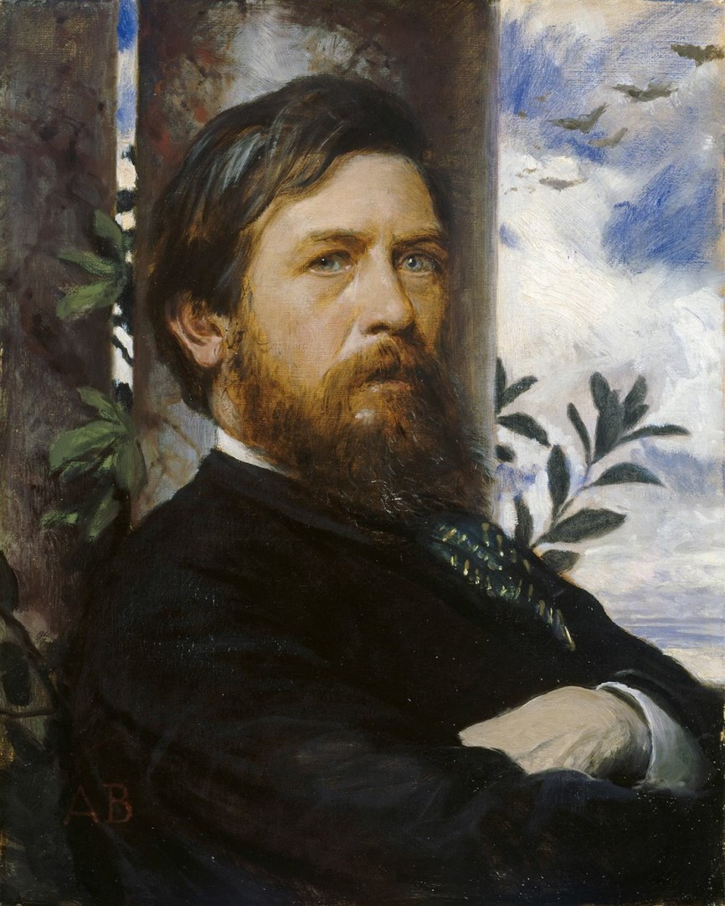

Het Arnold Böcklin-lettertype is in 1904 ontworpen door de Duitse letterontwerper Otto Weisert bij de lettergieterij van Otto Weisert. Dit lettertype is vernoemd ter nagedachtenis aan de Zwitserse kunstschilder van het symbolisme, Arnold Böcklin, die in 1901 overleed. De stijl van Arnold Böcklin, gekenmerkt door symbolisme, diende als inspiratie voor dit lettertype. Het doel ervan was om een decoratief lettertype te creëren dat in lijn was met de artistieke en decoratieve stijl van die tijd. Het lettertype werd specifiek ontworpen voor tekstonderdelen zoals titels, koppen en quotes. Het is bijna het meest erkende lettertype van de art-nouveau stijl.

Toteninsel is een serie schilderijen van de Zwitserse kunstenaar Arnold Böcklin (1827–1901), geproduceerd tussen 1880 en 1886. De derde versie van Het dodeneiland was baanbrekend als een van de eerste schilderijen met wijdverspreide (zwart-wit)reproducties en blijft een van de meest geliefde werken van het symbolisme. Het schilderij is diep geworteld in de romantiek.
Decoratief
Arnold Böcklin ziet er heel versierd uit. Het heeft bijzondere vormen die anders zijn dan gewone lettertypen.
Gotische Invloeden
Je kunt enkele gotische invloeden in de stijl van de letters herkennen, zoals krullen, scherpe hoeken en andere kenmerken die doen denken aan de gotische esthetiek.
Unieke Aesthetiek
Het heeft een aparte en herkenbare uitstraling die doet denken aan de tijd waarin het in eerste instantie is gemaakt..
Art Nouveau, ook wel bekend als de 'Nieuwe Kunst', is een internationale artistieke en architecturale stijl die opkwam aan het einde van de 19e eeuw en het begin van de 20e eeuw, met name in de periode tussen 1890 en 1910. Deze beweging kenmerkte zich door de afwijking van de academische en historische tradities van de 19e eeuw en het omarmen van nieuwe vormen, materialen en een gevoel van dynamiek. De voornaamste kenmerken van Art Nouveau omvatten:
Art Nouveau had als belangrijk doel de traditionele scheiding tussen beeldende kunsten (zoals schilderen en beeldhouwen) en toegepaste kunsten te doorbreken. Het vond expressie in interieurontwerp, grafische kunsten, meubels, glaskunst, textiel, keramiek, sieraden en metaalbewerking. Deze stijl was een reactie op de heersende academische en eclectische kunst van de 19e eeuw. In verschillende landen kreeg Art Nouveau verschillende namen en karakteristieken. Het verspreidde zich snel over heel Europa, van steden als Brussel en Parijs tot Turijn, Glasgow, München, Helsinki en Barcelona. Elke regio paste de stijl aan de eigen culturele en artistieke context aan.

Art Nouveau piekte op de Parijse Wereldtentoonstelling van 1900, met werken van kunstenaars als Louis Tiffany, Alphonse Mucha en glaswerk van Lalique en Émile Gallé. Na de Eerste Wereldoorlog verloor het aan invloed en werd in de jaren 20 opgevolgd door Art Deco en Modernisme. In de late jaren 60 en 70 kreeg het weer aandacht, vooral door exposities zoals die van Hector Guimard in 1970.